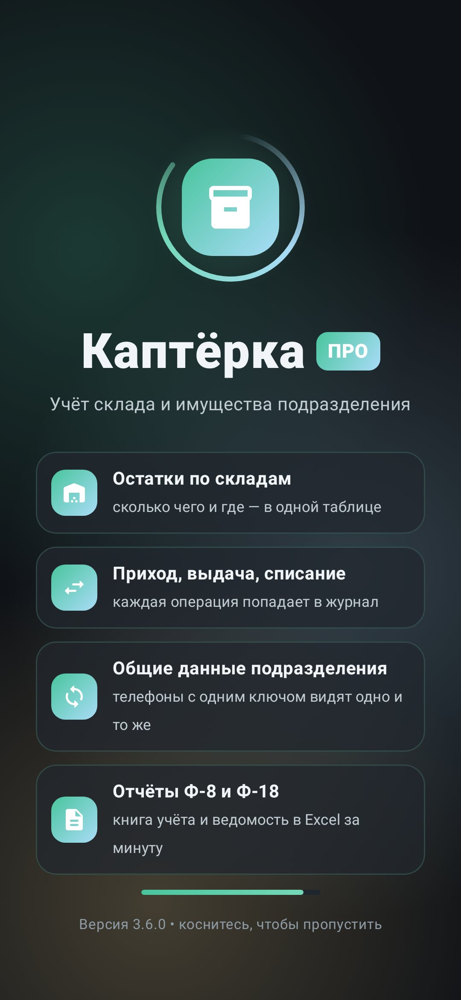

1. Первый запуск и регистрация

1Введите позывной или ФИО, название подразделения и почту.
2На почту придёт письмо «Код подтверждения» — 6 цифр есть и в теме письма, и в тексте. Введите их в шесть клеточек. Письма нет пару минут — проверьте «Спам» и «Промоакции» или нажмите «Отправить код снова».
3После подтверждения придёт письмо с ключом подразделения вида kapt_…. Этот ключ нужен, чтобы подключить второй телефон.
2. Главный экран: склады и остатки

- Сводка сверху: сколько всего единиц, наименований и складов.
- Кнопки операций: Приход, Выдача, Перемещение, Списание — одно касание.
- Поиск и фильтр по службам (РАВ, медицинская, вещевая и т.д.).
- Склады списком: нажмите на склад — раскроется таблица «приход / расход / остаток».
- Удерживайте карточку склада — откроется меню: выше, ниже, изменить, удалить. Удаление требует второго нажатия, базовый склад удалить нельзя.

3. Операции
- Приход — принять имущество на склад: склад, от кого, позиции, количество кнопками − / +.
- Выдача — выдать на другой склад, во взвод или человеку. Больше, чем есть на складе, выдать нельзя.
- Перемещение — со склада на склад, общий остаток не меняется.
- Списание — израсходовано или утрачено, с причиной.
После сохранения появляется анимированная галочка и короткая вибрация — операция записана и уйдёт на другие телефоны подразделения.
4. Журнал операций

- Кнопки Сегодня / 7 дней / 30 дней / Всё время — быстро сужают список.
- Операции сгруппированы по дням; нажмите на заголовок дня, чтобы свернуть его.
- Поиск по названию, складу, номеру документа; фильтр по типу операции.
- Длинный журнал подгружается частями — кнопка «Показать ещё»; кнопка «Наверх» возвращает к началу.
5. Заявки

Заявки идут по четырём этапам: Новая → Собирается → Собрана → Выдана. Вкладки сверху показывают, сколько заявок на каждом этапе.
- Нажмите «Новая заявка»: выберите склад, кому, добавьте позиции — приложение сразу покажет, хватает ли их на складе. Можно отметить «Срочно» — такая заявка будет первой.
- «Начать сборку» → «Собрана» → «Выдать».
- «Выдать» проводит настоящую выдачу: остаток на складе уменьшается, запись появляется в журнале и в форме 8.
6. Второй телефон: ключ и QR-код

- На первом телефоне нажмите «Подключить» вверху главного экрана — откроется QR-код и ключ подразделения.
- На втором телефоне при входе выберите «Подключиться», нажмите значок QR в поле ключа и наведите камеру на код. Или введите ключ вручную.
- Если данные на телефонах разошлись: на телефоне с правильными данными — «Этот телефон — эталон», на остальных — «Загрузить всё из облака».
7. Отчёты: формы 8 и 18

- Форма № 8 (ОКУД 6002203) — раздаточная (сдаточная) ведомость: получатели по строкам, имущество по графам, подписи «Выдал / Принял / Проверил / Бухгалтер».
- Форма № 18 — книга учёта: раздел на каждое наименование с графами «дата, документ, от кого / кому, приход, расход, остаток».
- Кнопка «Скачать Excel» сохраняет файл, «Текст/CSV» — отправляет в мессенджер или на почту.
8. Демо и лицензия PRO

- После установки — 3 дня полного доступа бесплатно.
- PRO на 30 дней: «Оплатить» → оплата через ЮKassa (СБП, карта МИР, SberPay) → вернуться и нажать «Я оплатил — проверить».
- Ключ и чек приходят на почту. Лицензия хранится на сервере и не пропадёт при переустановке.
- Сменили телефон — «Сменили телефон или потеряли ключ» → «Найти оплату по почте».
9. Частые вопросы
Не приходит код на почту. Проверьте «Спам» и «Промоакции», подождите минуту и нажмите «Отправить код снова». Можно продолжить без подтверждения.
Разные данные на телефонах. Проверьте, что ключ подразделения одинаковый, затем «Эталон» на правильном телефоне и «Загрузить из облака» на остальных.
Синхронизация работает только с VPN. Значит, оператор связи ограничивает доступ к облачным серверам. Учёт на телефоне продолжает работать, данные отправятся, когда связь появится.
Пропадут ли данные при обновлении? Нет. Новая версия ставится поверх старой, склад, журнал и лицензия сохраняются.